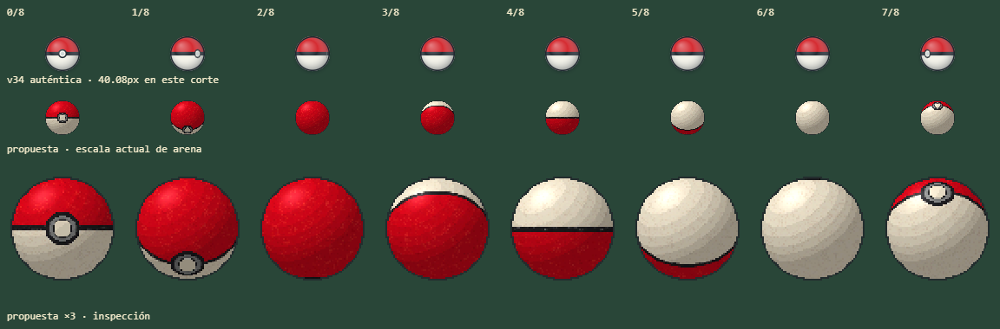
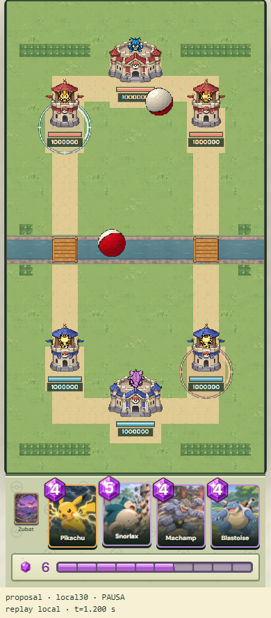
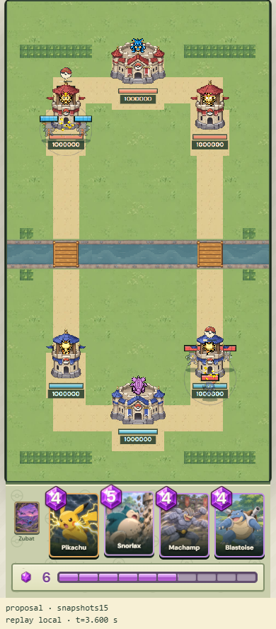

80/80 comprobaciones de navegador y 9/9 pruebas unitarias. Código local congelado con HEAD 62ff663, más los cambios locales identificados por hash, cámara 480×864. La cápsula mide 40,08 píxeles CSS en este tablero móvil; no hay cambios de píxeles durante la pausa.
El lado v34 reproduce la función gráfica publicada sobre la misma trayectoria local. Cada A/B cambia sólo el dibujo de la cápsula; no es una grabación de producción. El material rojo, blanco y la costura giran sobre la esfera. Root y Luna aprobaron la estética tras revisar los clips y fotogramas.
Método y procedencia por corte · Resultados, fuentes y hashes · Resumen numérico · Auditoría del paquete
Fila superior: gráfico v34. Fila central: propuesta a tamaño actual. Fila inferior: ampliación ×3. La tira conserva su tamaño; se puede desplazar horizontalmente.

Izquierda: gráfico auténtico v34 reproducido localmente. Derecha: propuesta. Ambos bandos lanzan, pausan y aterrizan sobre la misma trayectoria.


Atlas limitado a 256 entradas, 1024×1024; 3.840 accesos calientes, cero fases nuevas. El fixture conserva el HUD como fondo estático y usa lectura frecuente de canvas sólo para comprobar píxeles. No se publicó ningún cambio.